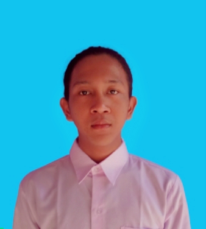

Ini adalah tugas Single Page Application
Ini adalah tugas Single Page Application

Hai, perkenalkan aku Moh Karto, aku berasal dari indramayu dan kini sedang menempu pendidikan jenjang Sarjana Teknik Informatika di STMIK IKMI CIREBON dengan Nim : 41215410
Salam, Aku Moh Karto
Oh iya, aku dari Kelas TI-2021-KIP-P6
Sebetulnya, aku tidak terlalu suka untuk men-deskripsikan diri sendiri.
Tapi kali ini, aku akan sedikit memperkenalkan diri, tetapi bukan untuk men-deskripsikan diri yah.
Aku adalah seorang pemuda kelahiran Juli, aku berdarah jawa dan tumbuh di lingkungan adat sunda-jawa.
Aku dibesarkan di kota mangga(kalian tebak saja tepatnya), mungkin itu saja perkenalan singkat dariku. Tabik ✨.
Hubungi Saya:
Wa : 089-770-360-34
Quora : Emka